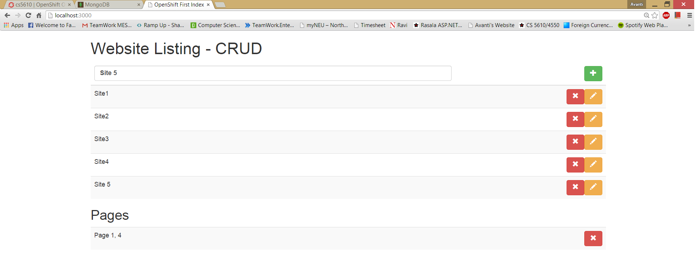

This link shows the static html
Click Here to see the Output

This Experiment is continuation of Experiment 30
In this experiment I have added a functionalitty to remove data from JSON document in the Open Shift.
Description :
Above code snippet will delete the a json document on the server which is part of another object ie page which is in currently selected site
where the websites will remove the row with given index and data is sent back using http get method to display on the page.
The above code snippet shows that we can use http.delete to delete the content from website.
the delete will remove the only 1 content starting with given index in the code.